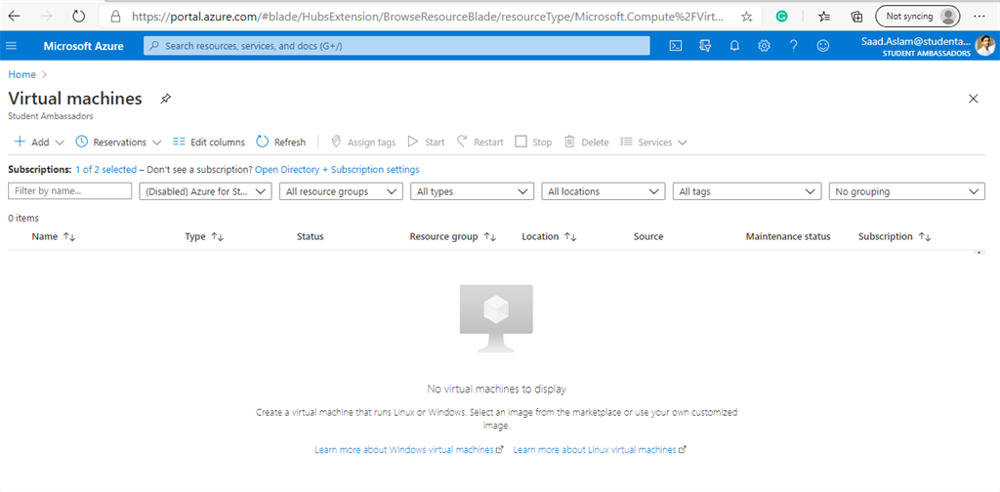
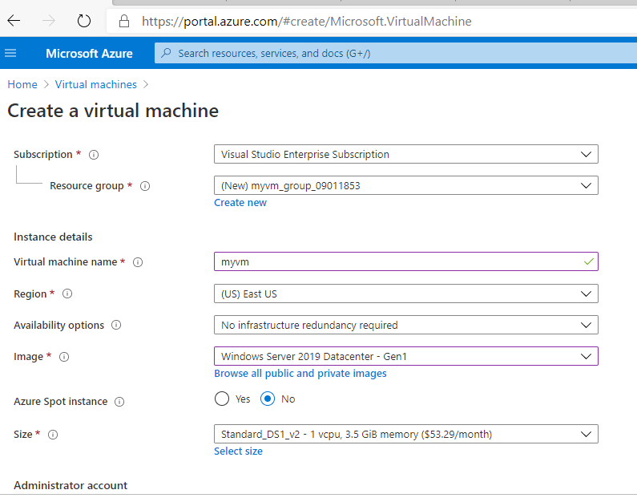
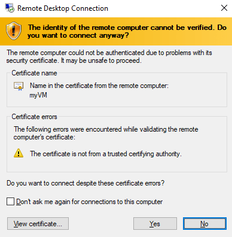
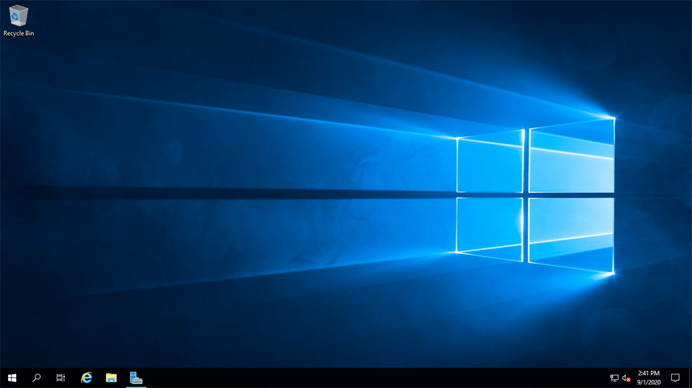
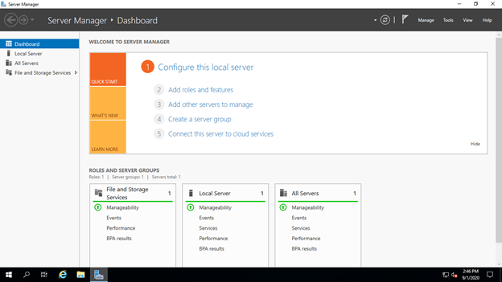

Create An Azure Virtual Machine Running A Windows Server

Introduction
Microsoft Azure’s Infrastructure as a Service offering gives you the ability to build, configure, and host your
virtual infrastructure in the cloud. However, this offering is not only limited to spinning up virtual machines.
With Azure, you can create complex virtual networks that span the globe, store data anywhere, and take advantage
of the innovative, world-leading cloud services, and the global footprint Azure offers. Sometimes we face difficulties
when running a Virtual Machine on a system that has fewer specifications including less RAM etc, that causes our
system to slow that will also the efficiency of applications we are running on.
In this article, we are going to create an Azure Virtual Machine that will run Microsoft Windows Server, which will resolve this problem. As long as you have a good internet
connection, you can connect to your virtual machine from any machine.
First of all sign in to your Azure Account and go to
Azure Portal.

Then click on “Virtual Machine” from the list of services available.

Click on “Add” at the left side of the screen

- After clicking on Virtual Machine, you will see an interface “Create a virtual machine”.
- Select the subscription you want to select for this Virtual machine, your subscription may vary.
- Create a new resource group.
- Enter the virtual machine name.
- In the Image section, select the operating system you want to run in the virtual machine. In our case, we are selecting Windows Server 2019.
- In the Size section, select the specs you want for your Virtual Machine. Increasing the size of the virtual machine will also affect the price of that.

- Select a username and password for your virtual machine. This username and a password will be used later on when setting up Remote Desktop connection so make sure to note the username and password.
- Select inbound ports HTTP and RDP that will be used for Remote Desktop Connection.
- After filling all the details, click on Review+Create. After reviewing, deployment of your Virtual Machine will start.

The deployment will take a couple of minutes to complete. After the deployment completes, you can view your Virtual
Machine.

Then click on Connect-> RDP

Then click on Download RDP File.

After downloading the RDP file, open that file and you will see a prompt requiring username and password. Here
the username and password will be used that was used earlier during the creation of the Virtual Machine. If you
enter any other username or password then it will give you a Logon error so make sure you are using the same
username and password used during the creation of Azure Virtual Machine.

After entering the username and password, click OK. A screen will show Remote Desktop Connection, click on Yes.

Then it will automatically open a Windows Server on your machine running on Azure Virtual Machine.


Conclusion
So by using Microsoft Azure Infrastructure, you can build innovative, integrated, and cloud-based solutions to
meet your needs and grow your business.